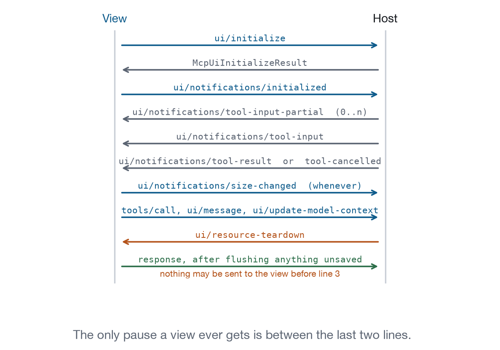

Chapter 14
Lifecycle and Connectivity
Your view will be destroyed without warning, hidden without notice, and disconnected without an event. One request in the whole protocol gives you time to react.
Assume you will be destroyed at any moment, with one request of warning, and that the warning may not come.
A page gets beforeunload. You get ui/resource-teardown, if the host is well behaved, and the interval before you answer it is the only time you are guaranteed to still exist.
Can I tell when nobody is looking?
lifecycle.visibilityCoreLevel 3PlatformKnow when the view is on screen and when it is not.
- Ground
- The browser inside the sandbox provides it. No host round trip.
- Recipes
- Dashboard, Monitoring Console, Media Viewer
- Demo
- lab-lifecycle
Partly. The Page Visibility API works when the host’s whole tab is hidden.
It does not cover the case that actually happens: the tab is visible and your frame has scrolled out of the conversation. document.hidden stays false, and your sparkline repaints every 1.4 seconds for nobody.
Press “Hide the frame” in the demonstration. The frame disappears, the transcript records nothing, and the poll counter inside keeps climbing.
Workaround. IntersectionObserver against the view’s own viewport does not help either, because the clipping is happening in a document you cannot see. What does help is being cheap by default: poll on demand rather than on a timer, coalesce updates, and let the server push through ui/notifications/tool-result instead of asking repeatedly.
What a mechanism would look like. The host already sends ui/notifications/host-context-changed for display mode. A visibility field in the same notification would cost nothing and would let a view suspend honestly. This is the third variation of the same missing signal, after surface.reveal and notify.attention, and they may all be one feature.
How do I stop doing work nobody sees?
lifecycle.suspendCoreLevel 3Yours to buildStop doing work nobody is looking at.
- Ground
- The view implements it. Nobody else can.
- Recipes
- Monitoring Console, Media Viewer
- Demo
- lab-lifecycle
Yours to build, and worth building even without a reliable signal.
Application behaviour. Keep a list of the things that consume resources while nobody is looking: timers, animations, observers, in-flight polling. Have one function that stops them and one that restarts them, and call the stop from visibilitychange and from ui/resource-teardown. Recipe 12’s player pauses on hide, which is both a resource decision and a courtesy: audio continuing from an invisible frame is genuinely alarming.
The general principle is that a view should be able to do nothing. A view that requires a heartbeat to stay correct will be wrong every time it is backgrounded, and it will be wrong silently.
Am I online?
lifecycle.connectivityCoreLevel 3PlatformShow online, offline, and reconnecting honestly.
- Ground
- The browser inside the sandbox provides it. No host round trip.
- Recipes
- Monitoring Console
- Demo
- lab-lifecycle
navigator.onLine and the online and offline events work inside the frame. They tell you whether the browser thinks it has a network, which is weaker than it sounds and still worth using.
What they cannot tell you is whether the host still has its connection to the server. That connection is the host’s, and there is no message reporting its state. Your evidence is indirect: a tools/call that fails, or one that never answers.
Application behaviour. Three states, honestly labelled. Live means something arrived recently. Reconnecting means a call failed and a retry is scheduled. Offline means the browser says so or retries have run out.
The crucial part is what the data looks like in the last two states. Recipe 9 keeps the last lines it received and says so in a banner, because a monitoring console that clears its screen when the connection drops has destroyed the evidence at the exact moment somebody needs it. Stale data with a timestamp is more useful than no data, as long as the interface never lets the user mistake one for the other.
How do I track unsaved work?
lifecycle.dirtyCoreLevel 2Yours to buildTrack uncommitted local state and say so.
- Ground
- The view implements it. Nobody else can.
- Recipes
- Document Editor, Settings and Preferences
- Demo
- lab-lifecycle
Tracking uncommitted local state is entirely yours, and the interesting part is what you can do with the knowledge.
Inside the view, a dirty flag drives the obvious things: enabling Save, disabling Discard, showing a marker. The chip in the demonstration goes from “saved” to “unsaved changes” on the first keystroke and back on save.
Across the boundary, there is nothing. No message tells the host that this view has unsaved work, so the host cannot warn the user before switching conversations, and cannot include the view in its own “you have unsaved changes” logic if it has any.
Workaround. Autosave, so that dirty is a state that lasts seconds rather than minutes. Then the teardown handshake below is enough to close the gap.

What do I do when the host closes me?
lifecycle.beforeCloseCoreLevel 2On the wireGet one chance to finish before the frame goes away.
- Messages
ui/resource-teardownreason- Ground
- The MCP Apps extension defines a message for it.
- Recipes
- Document Editor
- Demo
- lab-lifecycle
The one guarantee in the whole lifecycle, and the reason the previous entry’s gap is survivable.
Chapter 6 introduced this message from the view’s side of the pair. Here is what it is worth: the interval between the host asking and your code answering is the only interval in the whole protocol during which a view is guaranteed to still exist and to have the host’s attention. Everything you were going to lose has to be flushed inside it.
Extracted from from apps/recipes/r04-document-editor/index.html
bridge.on("teardown", async ({ reason }) => {
$("#log").textContent = `Host is closing this view: ${reason}`;
if (dirty) {
$("#log").textContent += " Flushing unsaved changes first.";
await save();
}
});Rules for the window. Do the smallest possible thing. This is a flush, not a save dialog: you cannot ask the user a question, because the host is waiting and the user is already leaving. Bound it. A host that waits forever for a view that never answers is a host that will stop waiting, and different hosts will stop at different times. And answer even on failure, because an unanswered request is indistinguishable from a hung view.
Failure modes. A host that does not send the request at all takes your work with it, which is why autosave matters more here than in a page. A host that sends it and does not wait looks identical from the inside, and the only way to know is to measure. The demonstration’s teardown control reports how long the view took to answer, which is the same measurement a conformance test makes.
How do I ask to be closed?
The other direction is ui/notifications/request-teardown, covered as surface.close in Chapter 6. It is worth restating the asymmetry here, because the pair is the whole lifecycle contract: the view asks with a notification that may be ignored, and the host tells with a request that must be answered. Neither side can force the other, and the protocol is deliberately arranged so that the party who owns the window has the last word.
Worked example: one second in the document editor
Recipe 4’s document editor is the clearest illustration of this whole chapter, because everything it does is a response to not being able to rely on anything.
The user types. A timer starts. After 900 milliseconds of quiet the view commits an undo transaction and calls save_document, which is an app-only tool, so the model neither sees the save nor can trigger one. The chip goes from amber to green.
Now the host tears the view down. ui/resource-teardown arrives with a reason. If the chip is green, the view answers immediately and the frame goes away with nothing lost. If it is amber, the view saves first and then answers, and the demonstration reports how many milliseconds that took, because that number is the thing a host either waits for or does not.
The total exposure is 900 milliseconds of typing, and it is bounded by a constant the view chose rather than by anything the protocol promises. That is the shape of every lifecycle decision in this environment: pick a bound, make it small, and assume the warning may not come.
Host behaviour, in detail
Send ui/resource-teardown before removing a frame, for any reason, including reasons the user initiated. Give the reason, because a view can behave differently for “the user closed the conversation” and “this view is being replaced by a newer result”.
Wait for the response, with a deadline that is generous rather than tight. A view flushing to a server needs a network round trip, and a host that waits 200 milliseconds has effectively not waited.
Answer ping. It is the only way a view can check that the channel is still there, and a host that ignores it leaves the view unable to distinguish a slow call from a dead one.
Do not send anything before ui/notifications/initialized. A host that sends tool input early loses it, and the loss is silent.
Conformance checks
ui/resource-teardownis sent before the frame is removed, with a reason.- The host waits for the response, and a view that takes 600 milliseconds is not cut off.
- Nothing is sent to the view before
ui/notifications/initialized. pingis answered.- Hiding the host’s tab fires
visibilitychangeinside the frame. - A view that is scrolled out of view receives no signal, which is the gap in Appendix B rather than a conformance failure.
What to remember
Assume you will be destroyed at any moment with one request of warning, and that the warning may not come. Every design decision in this group follows from that: autosave rather than save, server state rather than view state, cheap by default rather than suspend on a signal you may not receive.